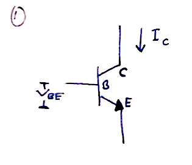
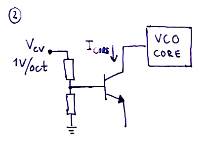

The VCO is a wonderful thing that does only a very simple task - it generates a repeating waveform at a specific frequency. But understanding what makes it tick is quite a bit harder. I have found several very good tutorials and explanations on the net, but I felt that there was something missing. This document tries to correct that. I wrote it to help me structure my thoughts and work out enough of the missing bits to select the correct component values for a VCO. Hopefully it will help others do the same.
Since I started toying around with electronics, I've experienced that it is very easy to find stuff about the most elementary things - like making an LED blink. It is also easy to find advanced designs where the more complex parts are explained. However, quite often the advanced designs expect you to know a lot up front or to be able to work it out. This intermediate stuff is really really hard to find.
While trying to learn about the VCO I came across two particularly good documents. One is René Schmitz "A tutorial on exponential convertors and temperature compensation", the other is Michael Kukat's "Synth-DIY: The exponential converter".
Both these give a good explanation of a very essential part of the VCO, the exponential converter. What I miss however, is an explanation of the basics - why should the exponential converter be fed exactly $18 mV$ at room temperature etc. I also need to see the maths to understand what the tricks are and how the relevant formulas are, well, formulated :)
Thus, I've written this doc as a sort of preface to/annotated version of the other docs, leaving in the maths for the ones interested and highlighting formulas and results that may be usefull if you want to do your own calculations.
Many of you may have a general understanding of how the VCO works. You input a $1V/octave$ control voltage (CV) at one end, and get a wave of some sort at the other. You may also know that the output wave's frequency is doubling with every octave, so if you start with a wave of $440Hz$ and increase the voltage with one volt you'll get a wave of $880Hz$, one octave up. Increasing the voltate an additional volt gives you a wave of $1760Hz$ or two octaves up etc. The frequency is in other words exponential to the input voltage.
But how does the VCO do all this?
In a common VCO design there are three main parts.
1) An exponential converter (or antilog converter). This converts a linear $1V/octave$ input CV into an exponential current. This is necessary as the next stage in the VCO creates a wave with a frequency linearly propotional to the input current, and tone frequencies increase exponentially as we go up the scale.
2) A VCO core that generates a periodic signal, often a saw or triangle wave. As mentioned above, the core creates a signal with a frequency proportional to the input current.
3) A wave shaper that converts the core's wave into other wave types, typically triangle, square/pulse and sine waves.
Of these parts, the exponential converter is the most complex one to understand due to the fact that the components used change their operation with changes in ambient temperature. But instead of jumping directly to the more advanced circuits and techniques for temperature compensation, we'll look at the basics.
The most common way of creating an exponential converter is to use a bipolar junction transistor (BJT). Both NPN and PNP types are possible to use, but the NPN seems more popular and more accurate according to Schmitz.
As mentioned, it suffers from major issues when the temperature changes, but let's ignore that for a second and look at how a basic converter works.
The magic of the converter is a result of the relationship between the base-emitter voltage $V_{be}$ and the collector current $I_c$.
From what is called the Ebers-Moll equation* (*approximation), we get that
\(I_c = I_s \cdot (e^\frac{V_{be}}{V_t} -1 )\)
where
\(V_t = \frac{k \cdot T}{q}\)
Also, remember that °Kelvin = °Celcius + 273.16
As $T$ is dependent on the temperature, $V_t$ also changes when the temperature changes. In fact
$e^{\frac{V_{be}}{V_t}}$ decreases as the temperature increases.
$I_s$ is the reverse saturation current for a particular transistor. It is seldom (if ever) mentioned in the transistor data sheets and has a complex formula, but all we need to know right now is that it varies wildly with temperature. In According to Schmitz,
$I_s$ doubles with every 10°C increase.
$I_s$ is in the range of $10^{-15}$ to $10^{-12}$, in other words really small. Because $I_s$ is much smaller than the resulting $I_c$, we can ignore $-1$ in the Ebers-Moll equation and write
\(I_c = I_s \cdot e^\frac{V_{be}}{V_t}\)
Aha, so we have an exponential relation between $I_c$ and $V_{be}$. This means we can control $I_c$ via $V_{be}$ and then use $I_c$ to control the VCO frequency. In other words, we have voltage control over the VCO pitch.
The main goal of the exponential converter is to double the output current $I_c$ for any $1V$ increase of the input voltage $V_{be}$. The output current will be fed to the VCO core and thus double the frequency when the voltage is increased by $1V$.
Since $I_c$ is related to $V_{be}$ as expressed in the Ebers-Moll equation, it is not possible to get this $1V/oct$ relation using a transistor alone. Increasing $V_{be}$ by $1V$ will actually increase the output current more than 50 times.
Instead we have to work backwards, calculating what change in $V_{be}$, lets call it $\Delta V_{be}$, that results in a doubling of $I_c$. Fortunately, we can easily convert $1V$ into the required $\Delta V_{be}$ by using a resistor voltage divider.
So, doing the maths, we find that the increase in input voltage necessary to double the output current is:
If we let $I_{c_0}$ be the initial current and $I_{c_1}$ be the current that produces a frequency one octave up, we can write
\(I_{c_1} = 2 \cdot I_{c_0}\)
\(I_s \cdot e^\frac{V_{be_1}}{V_t} = 2 \cdot I_s \cdot e^\frac{V_{be_0}}{V_t}\)
\(e^\frac{V_{be_1}}{V_t} = 2 \cdot e^\frac{V_{be_0}}{V_t}\)
\(ln(e^\frac{V_{be_1}}{V_t}) = ln (2\cdot e^\frac{V_{be_0}}{V_t})\)
\(ln(e^\frac{V_{be_1}}{V_t}) = ln (2) + ln(e^\frac{V_{be_0}}{V_t})\)
\(\frac{V_{be_1}}{V_t} = ln (2) + \frac{V_{be_0}}{V_t}\)
\(\frac{V_{be_1}-V_{be_0}}{V_t} = ln(2)\)
\(V_{be_1}-V_{be_0} = V_t \cdot ln (2)\)
Now we're talking! $V_{be_1}-V_{be_0}$ is in fact $\Delta V_{be}$, the voltage change necessary to double $I_c$. Thus:
\(\Delta V_{be} = V_t \cdot ln(2)\)
In the general case, to get $x \cdot I_c$, you have to increase $V_{be}$ by $V_t \cdot ln(x)$. This can be used, for example, to calculate the voltage change necessary to increase the frequency by one semitone.
So, we arrive at our first result. If we assume we have a constant temperature of $20°C$, we get
\(V_{t_{20°C}} = \frac{1.38 \cdot 10^{-23}J/°K \cdot (20 + 273.16)°K}{1.6 \cdot 10^{-19} C} = 25.29mV \)
which in turn gives
\(\Delta V_{be} = 25.29mV \cdot ln(2) = 17.53 mV\)
This means that, in case of our VCO,
At $20°C$, any increase in $V_{be}$ of $17.5mV$, independently of the initial $V_{be}$, will result in a tone one octave up from the starting tone.
An increase of $35mV$ will give you two octaves up etc. All we have to do now is to build a resistor voltage divider that converts $1V$ to $17.5mV$ and we have a $1V/oct$ exponential converter.

Ah, but all is not well with our exponential converter. If we managed to keep it at exactly $20°C$ at all times it would be fine, but even small variations in temperature will dramatically change $I_s$. Let's take a closer look at what is going on.
While that is true, the formula for $\Delta V_{be}$ only gives us the expected increase of $I_c$ as a factor of the initial $I_c$. The initial $I_c$ is still very much depending on $I_s$ through the Ebers-Moll equation.
To see this, consider the following:
At a starting temperature $T_0$ we have
$I_{c_0} = I_{s_0} \cdot e^\frac{V_{be}}{V_{t_0}}$
If we increase the temperature by $10°C$, $I_s$ doubles, which gives us, at temperature $T_1$ = $T_0$ + $10°C$,
$I_{c_1} = {2} \cdot I_{s_0} \cdot e^\frac{V_{be}}{V_{t_1}}$
In other words we get a doubling of $I_c$ and thus the VCO frequency when the temperature increases by $10°C$.
Even though $I_c$ doubles, our formula for $\Delta V_{be}$ still holds true though the actual value changes a bit as $V_t$ is also temperature dependent.
The temperature effect on $V_t$, although opposite of $I_s$, is very much smaller. However, it is not negligible. When the temperature rises, so does $V_t$. Since $V_t$ is in the denominator of the exponent in the Ebers-Moll equation, the exponent decreases with increasing temperatures. This in turn means that to get the same output current $I_c$, we have to increase the input voltage $V_{be}$. In other words, as the temperature increases, so does the voltage necessary to double the frequency.
Increasing the temperature from $20°C$ to $30°C$ will yield the following effect on $V_t$:
At $20°C$ we found that the $\Delta V_{be}$ necessary to double the output current was $17.53mV$.
Recalculating $\Delta V_{be}$ at $30°C$ gives us
\(V_{t_{30°C}} = \frac{1.38 \cdot 10^{-23}J/°K \cdot (30 + 273.16)°K}{1.6 \cdot 10^{-19} C} = 26.15mV \)
$\Delta V_{be_{30°C}} = 26.15mV \cdot ln(2) = 18.12 mV$.
So, it takes $0.59mV$ or about $3.4\%$ more to double the frequency at $30°C$ than it did at $20°C$. Not that much, but enough to make the VCO go sour.
1) The effect of the temperature on $I_s$ changes the "base tone", all tones are shifted up the same amount when the temperature rises.
In other words, the VCO drifts, it goes out of tune, but all tones are shifted in a way that preserves the relation between them. If only $I_s$ changed, a person without perfect pitch may not have noticed that anything had changed (unless of course you compared the before and after tones).
2) The effect of the temperature on $V_t$ changes the distance in volts between the top and bottom tones of an octave.
As the temperature rises, a larger voltage is needed to double Ic and with it double the frequency, going one octave up. In other words, unless the voltage "spacing" between each tone is increased with rising temperatures, the distance between each tone (in Hz) will be too short. You will still be able to tune in a single perfect tone, say C3. However, all tones above C3 will sound flat (and increasingly so as you move up the scale) and all tones below will sound too sharp.
To prove 1), that the interval between two tones stays the same as the temperature rises, look at this example.
Ignoring any change to $V_t$ caused by the temperature, we can use $V_t = 25.3mV$.
At an initial input voltage of 0V, we get that
$e^\frac{V_{be}}{V_t} = e^0 = 1$
Increasing $V_{be}$ by $17.5mV$, effectively going one octave up, gives us
$e^\frac{V_{be}}{V_t} = e^\frac{17.5mV}{25.3mV} = 2$
For simplicity, lets say that $I_s = 1mA$ at $20°C$ and that a current $I_c$ of $1mA$ produces a tone with frequency $440Hz$ ($I_s$ will never be this high, it stays in the region $10^{-15}$ to $10^{-12}$, but this makes the maths easier and the result is the same).
Thus, at $V_{be} = 0$
$I_c = 1mA \cdot e^0 = 1mA$, producing a VCO frequency of $440Hz$.
Increasing $V_{be}$ to $17.5mV$ gives us
$I_c = 1mA \cdot e^\frac{17.5mV}{25.3mV} = 2mA$, producing a VCO frequency of $2 \cdot 440Hz = 880Hz$, or exactly one octave up.
Now, let us increase the temperature by $10°C$. We now that $I_c$ doubles to $2mA$. The effect is this:
For $V_{be} = 0$,
$I_c = 2mA \cdot e^0 = 2mA$, producing a VCO frequency of $2 \cdot 440Hz = 880Hz$ (it has thus doubled).
and for $V_{be} = 17.5mV$,
$Ic = 2mA \cdot e^\frac{17.5mV}{25.3mV} = 4mA$, producing a VCO frequency of $4 \cdot 440Hz = 1760Hz$ (again, doubling the previous value).
Notice now that the relation between the first and the second frequency for each temperature is the same. Both are doubled, in other words the interval is exactly one octave in both cases. Even if the VCO may not be in tune, the individual intervals between tones are still correct. (Again, this is only valid if we ignore the changes in $V_t$).
From the preceding discussion, it should be clear that there are two major effects of temperature changes on a transistor. By far the worst one is the change to $I_s$, it makes the VCO super sensitive to temperature changes, drifting with one octave per $10°C$.
The second effect, $V_t$, changes the intervals between each tone only slightly, it is changed by $0.6 mV$ or about $3.4\%$ when going from $20°C$ to $30°C$. Even so, it is important to get rid of when trying to build a temperature stable oscillator*.
* it may not be necessary to compensate for this when using the exponential converter in a filter or VCA. $I_s$ however must always be compensated.
So, now we know how an exponential converter works, and how it is affected by temperature. Lets see how we can make the temperature less of an issue.